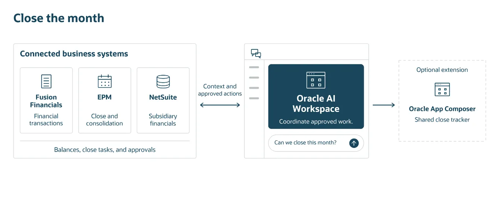
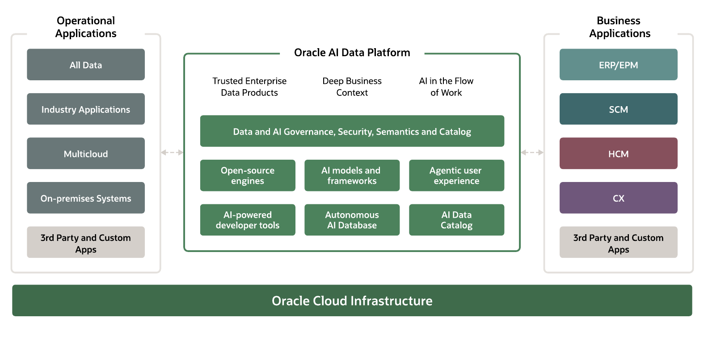
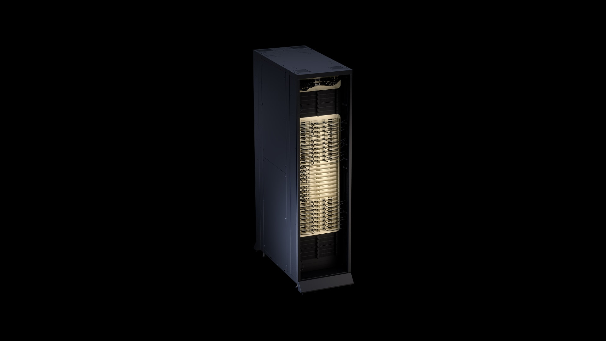

AI NEWS ISSUE 30
Oracle·OpenAI, 업무 시스템을 ChatGPT로 연결하다
기업의 업무를 에이전트에게 맡기려면, 시스템 연결과 함께 데이터의 뜻과 실행 조건도 알려줘야 합니다. Oracle의 업무 맥락 관리, Google의 Genie 4, OCI의 반도체 선택지와 OpenAI 연구의 검증 과정을 함께 읽습니다.
AT A GLANCE
30초 요약
- Oracle·OpenAI ChatGPT에서 기업 데이터를 조회하고 승인된 업무를 수행할 수 있도록 시스템 연동을 개발하고 있습니다.
- Oracle AI Data Platform 문서·스키마에서 업무 관계를 추출하고 전문가가 승인하는 새 기능을 발표했습니다. 향후 12개월 이내 제공할 계획입니다.
- Genie 4 움직임·소리·대화를 함께 생성하며, 글로 지시해 진행 중인 장면을 바꿀 수 있습니다. 현재는 제한된 테스터 대상 연구 프리뷰입니다.
- OCI NVIDIA Vera Rubin NVL72·Vera CPU는 정식 제공을 발표했고, Google TPU·Cerebras 추론은 2027년 제공을 예고했습니다.
- OpenAI의 ETH 연구 반박 증명을 공개했다는 발표와, 학계가 그 의미와 정확성을 검토하는 과정은 나누어 읽어야 합니다.
자료 확인 2026년 10월 28일 한국시간 기준입니다. 주요 발표의 원문 표기일은 10월 27일이며, ETH 연구 발표는 10월 26일입니다.
01 / ORACLE · OPENAI
여러 업무 시스템을
하나의 대화에서 연결합니다
Oracle과 OpenAI가 협력을 확대했습니다. 개발 중인 Oracle AI Workspace는 ChatGPT에서 Oracle의 애플리케이션과 데이터를 찾아보고, 조직이 승인한 업무를 수행할 수 있도록 연결하는 도구입니다. 월말 결산 담당자가 비용을 조사하고 구매 내역과 남은 마감 작업을 함께 확인하는 것이 발표에 나온 예시입니다. OpenAI 발표 ↗


이때 회사의 권한과 승인 절차가 중요합니다. Oracle의 제품 설명은 Fusion Applications·NetSuite·데이터베이스와 지원되는 외부 도구를 연결하고, 필요한 단계에서 사람의 승인을 받는 흐름을 제시합니다. Oracle은 Workspace의 제한 제공을 앞두고 사전 신청을 받고 있습니다. OpenAI의 파트너 페이지에는 NetSuite·Oracle Analytics 등 일부 플러그인의 설치 안내도 있어, 개별 연결과 전체 Workspace의 제공 상태를 구분해 봐야 합니다. Workspace 제품 안내 ↗ 플러그인 안내 ↗
앱 제작과 보안 점검 도구도 소개했습니다
Oracle App Composer는 Codex 등으로 앱을 만들고 승인된 Oracle 데이터·업무 기능에 연결하는 도구입니다. OCI 배포는 Oracle이 관리하도록 설계했습니다. AI Security Mesh는 OpenAI의 사이버 보안 모델로 애플리케이션·인프라의 취약점을 찾고 수정하는 관리형 서비스로 소개됐습니다.
별도로 미국 Oracle 고객은 Marketplace에서 OpenAI API·Codex·ChatGPT Work를 구매하고, 조건에 맞는 Oracle Universal Credits를 사용할 수 있습니다. 이 구매 경로가 열렸다는 사실을 새 제품 전체의 정식 출시로 읽으면 안 됩니다.
02 / ORACLE AI DATA PLATFORM
업무의 뜻과 관계를
함께 관리합니다
Oracle은 같은 날 AI Data Platform의 새 기능을 발표했습니다. 핵심은 업무 개념·관계·정책을 정리한 비즈니스 온톨로지입니다. AI Discovery 에이전트가 데이터베이스 스키마, 시맨틱 모델, API·업무 문서를 읽어 초안을 만들고, 업무 전문가가 검토·수정한 뒤 승인하는 방식입니다. Oracle 발표 ↗


업무 맥락을 만들고 다시 쓰는 흐름
- 기존 자료를 읽습니다스키마·API·업무 문서에서 개념과 관계의 초안을 만듭니다.
- 전문가가 승인합니다빠진 정책과 예외를 보완하고, 사용할 업무 지식을 확정합니다.
- 필요한 맥락을 모읍니다Semantic Reasoning Engine이 관계·데이터·통제 조건을 정리해 모델에 전달합니다.
이렇게 구성한 업무 맥락을 운영하는 도구도 소개했습니다. AI Registry는 에이전트·도구·Skill·MCP 서버의 소유자, 버전, 의존관계, 권한과 상태를 관리합니다. AI Governance and Control은 품질·행동·사용량·비용을 살피는 기능으로 계획돼 있습니다. 고객과 함께 설계·검증·운영을 진행하는 Innovation Service도 발표했습니다.
토큰 절감과 운영 효율 향상은 Oracle이 제시한 기대 효과입니다. 이번 발표에는 이를 뒷받침하는 업무별 독립 비교 결과가 없어, 실제 효과는 도입 과정에서 확인해야 합니다.
문서를 찾은 뒤에도 남는 판단
가상의 커머스 업무를 생각해 보겠습니다. “이번 주 쿠폰 비용이 왜 늘었나요?”에 답하려면 발급량뿐 아니라 실제 사용, 반품, 할인 부담 주체와 정산 기준도 연결해야 합니다. 주문과 쿠폰의 테이블 관계만으로는 “부분 반품 때 어느 쪽이 얼마를 부담하는가”까지 알기 어렵습니다.
문서 검색에 이렇게 확인한 관계와 정책을 함께 주면, 매번 같은 내용을 다시 해석하는 일을 줄일 수 있을 것입니다. 다만 그 효과는 관계가 얼마나 많으냐보다, 근거와 적용 시점이 맞느냐에 달려 있습니다. 이 커머스 예시는 발표를 업무에 연결해 본 우리의 해석입니다.
03 / GOOGLE DEEPMIND · GENIE 4
장면을 바꾸면,
움직임과 소리도 이어집니다
Google DeepMind는 실시간으로 상호작용하는 세계를 생성하는 Genie 4를 공개했습니다. 사용자가 진행 중에 글로 날씨나 인물, 카메라 움직임을 바꾸면 다음 장면에 반영하며, 환경음·음악·대화도 함께 생성한다고 설명합니다. Google DeepMind 발표 ↗
Gemini와의 역할 분담도 눈에 띕니다. Gemini 3.8 Flash가 장면을 관찰하고 목표를 단계로 나눠 진행을 확인하면, Genie 4가 세계를 생성합니다. 사용자가 개입하면 계획도 조정합니다. 별도의 로봇 연구 예시에서는 Gemini 4 Argon과 Genie 4를 함께 사용했습니다.
현재는 Google이 선정한 테스터에게 제공하는 연구 프리뷰입니다. Project Genie의 Google AI Ultra 가입자와 Gemini API·AI Studio의 일부 파트너로 접근을 확대할 예정입니다.
Google은 긴 실행에서 사물의 모습과 위치가 달라질 수 있고, 복잡한 물리 상호작용과 공간 정확성에도 과제가 남아 있다고 밝혔습니다. 창고 로봇의 새 동선을 구상하는 데 활용할 가능성은 있지만, 실제 설비의 안전성 판단에는 검증된 시뮬레이터와 현장 시험이 별도로 필요하겠습니다.
04 / ORACLE CLOUD INFRASTRUCTURE
고를 수 있는 반도체는 늘고,
이용 시점은 서로 다릅니다
Oracle은 OCI의 AI 인프라 선택지도 넓혔습니다. NVIDIA 플랫폼의 정식 제공과 확장 계획, Google TPU와 Cerebras 추론 도입 계획이 함께 나왔습니다.


| 대상 | 제공 상태 | 발표가 다루는 범위 |
|---|---|---|
| NVIDIA Vera Rubin NVL72·Vera CPU | 정식 제공 발표 | NVL72 인프라를 추가 확장할 계획. Rubin NVL8 도입은 별도 계획입니다. |
| Google TPU | 2027년 예정 | OCI에서 학습·추론용 TPU를 제공하고 여러 해에 걸쳐 용량을 확대합니다. |
| Cerebras Inference | 2027년 예정 | 여러 번 모델을 호출하는 에이전트 등을 위한 고속 추론 선택지를 추가합니다. |
근거 Oracle의 NVIDIA 안내 ↗ · TPU 발표 ↗ · Cerebras 발표 ↗
Cerebras는 연산과 메모리를 하나의 웨이퍼 규모 칩에 모아 데이터 이동을 줄이는 구조를 강조합니다. 모델 호출을 반복하는 작업에서는 빠른 응답이 도움이 될 수 있습니다. 하지만 데이터 조회와 도구 실행, 결과 검토가 오래 걸리는 업무라면 토큰 생성 속도만큼 전체 시간이 줄지는 않겠죠.
도입 판단에는 같은 업무를 끝낸 시간과 정확도, 재시도까지 포함한 완료 건당 비용이 필요합니다. 확인한 TPU·Cerebras 발표문에는 OCI 서비스의 구체적인 가격이나 동일 업무의 비용 비교가 없어, 절감액을 계산할 단계는 아닙니다.
05 / OPENAI · RESEARCH VERIFICATION
증명이 공개됐다는 발표와,
검토가 끝났다는 결론 사이
OpenAI는 10월 26일 자사 시스템이 지수시간 가설(ETH)을 반박하는 증명을 만들었고 Lean으로 확인했다고 발표했습니다. ETH는 변수 수 n을 기준으로 3-SAT 문제를 준지수 시간(2o(n))에 푸는 알고리즘이 없다는 가설입니다. 반박이 인정되면 이를 전제로 한 계산 복잡도 연구를 다시 살펴야 합니다. OpenAI 연구 발표 ↗
공개 저장소에는 자연어 논문과 형식화 자료가 있습니다. 외부 검토는 UC San Diego의 Russell Impagliazzo·Ramamohan Paturi, MIT의 Ryan Williams가 이끄는 그룹이 맡습니다. OpenAI가 밝힌 연구와 공개의 경과는 다음과 같습니다.
결과 생성부터 독립 검토까지
- 자연어 증명 생성
OpenAI가 AI로 ETH 반박 결과를 얻었다고 밝힌 날입니다.
- Lean 형식화 완료
OpenAI가 결과를 형식화했다고 밝힌 날입니다. 확인한 명제와 조건은 별도 범위 문서에 적혀 있습니다.
- 공개 발표와 자료 안내
논문·Lean 자료의 공개와 외부 연구단의 검토 계획을 알렸습니다.
- 독립 검토결과를 이해하고 확인하는 단계
연구단이 증명과 그 의미를 살펴봅니다. 검토 완료일은 발표에 제시되지 않았습니다.
특히 공식 형식화 범위 문서 ↗는 Lean에서 확인한 시간 상한이 10월 25일자 논문의 더 강한 상한과 다르다고 설명합니다. 둘 다 준지수 시간으로 제시되지만, “논문에 적힌 모든 결과를 기계가 확인했다”로 넓혀 읽을 수는 없습니다.
현재 자료는 P=NP의 해결이나 실무 최적화의 즉각적인 속도 향상을 뜻하지 않습니다. OpenAI도 실제로 더 나은 알고리즘을 찾아 구현하려면 추가 연구가 필요하다고 밝혔습니다. 개발할 때도 검사 통과 여부뿐 아니라 검사한 조건과 범위를 함께 확인해야겠습니다.
OUR VIEW
매번 설명하던 업무 지식을
검토하고 다시 쓰는 자산으로
이번 Oracle 발표에서 우리 업무와 가장 가까운 부분은 업무 지식의 재사용입니다. 개발자가 매번 테이블의 뜻과 예외 규칙을 설명해야 한다면, 모델이 코드를 빨리 써도 앞뒤의 조사와 검토는 계속 남습니다.
예를 들어 쿠폰 정책을 바꿀 때 “할인 계산”뿐 아니라 “부분 반품 후 할인 재계산”과 “판매자 정산”까지 연결돼 있다는 사실을 근거와 함께 관리하면 다음 변경에도 쓸 수 있습니다. 정책이 바뀌면 이 관계도 갱신해야 합니다. 업무 규칙의 버전과 근거, 담당자를 남기는 일이 모델을 연결하는 일만큼 중요해집니다.
Genie 4와 ETH 연구는 서로 다른 영역의 소식입니다. 다만 그럴듯한 장면이나 검사 통과라는 결과를 보고 바로 다음 결정을 내리기보다, 어떤 조건과 범위에서 나온 결과인지 살펴야 한다는 점은 우리의 개발·검토 과정에도 연결됩니다.
OUR EXPERIMENT · 제안
쿠폰 정책 하나를 바꿀 때,
빠진 API와 테스트를 찾아봅니다
쿠폰의 최대 할인금액을 ‘주문 전체’에서 ‘판매자별’로 바꾼다고 해보겠습니다. 할인 계산뿐 아니라 부분 반품과 판매자 정산까지, 어디를 고쳐야 하는지 찾아야 합니다.
이 실험에서는 쿠폰·반품·정산에 한정한 작은 업무 온톨로지를 만들어 보겠습니다. 업무의 뜻과 규칙, 서로 영향을 주는 관계를 사람이 읽고 고칠 수 있는 ‘업무 관계표’로 정리하는 것입니다.
목적은 AI가 연결된 업무를 찾아 변경 영향을 덜 놓치게 하는 것입니다. 문서와 코드를 검색하는 작은 분석 도구에 이 관계표를 더해, 답변이 나아지는지와 사람의 전체 작업 시간이 줄어드는지를 함께 비교합니다.
아직 실행하지 않은 가상 실험 제안입니다.
같은 요청을 두 방식으로 분석합니다
정책 문서, API 명세, 테이블 구조, 코드와 테스트를 준비합니다. 두 방식 모두 아래 요청을 받고, 코드를 수정하지 않고 영향 목록만 만듭니다.
분석 도구에 줄 요청
쿠폰 최대 할인금액을 주문 전체 기준에서 판매자별 기준으로 바꾸려 합니다. 영향을 받는 API·업무 규칙·테스트와 그 근거를 정리해 주세요. 코드 수정은 하지 마세요.
- 문서와 코드만 읽기자료를 검색하면서 어떤 업무와 기능이 연결돼 있는지 AI가 파악합니다.
- 업무 관계표도 함께 읽기같은 자료에 사람이 검토한 업무 관계와 근거를 정리한 표를 추가합니다.
관계표에는 ‘부분 반품이 생기면 할인금액을 다시 계산하고, 그 결과를 판매자 정산에 반영한다’처럼 연결된 업무를 적습니다. 이때 규칙이 적용되는 조건과 근거가 되는 정책 문서·코드 위치도 함께 남깁니다.
두 방식의 차이는 이 관계표 하나로 두고, 모델과 요청문 등 나머지 조건은 맞춥니다.
할인에서 반품·정산까지 이어서 찾는지 봅니다
| 확인할 상황 | 찾아야 할 내용 |
|---|---|
| 판매자가 둘인 주문 | 할인 계산 API와 판매자별 한도를 확인하는 테스트 |
| 한 판매자 상품만 반품 | 환불 시 할인 재계산과 판매자 정산, 새 정책 적용 전 주문의 처리 |
| 문서와 코드의 규칙이 다름 | 충돌하는 근거를 제시하고, 어느 쪽을 따를지 판단 보류 |
찾은 항목마다 영향을 받는 이유와 문서·코드의 근거 위치를 붙이게 합니다. 자료가 빠졌거나 검색에 실패했을 때 추측하지 않고 분석을 보류하는지도 확인합니다.
놓친 작업과 사람이 들인 시간을 비교합니다
사람이 미리 만든 정답 목록과 AI의 답변을 대조합니다. 정답 목록은 AI에 주지 않고, 다음 세 가지를 살펴봅니다.
- 빠뜨린 작업 실제로 영향을 받는 API·규칙·테스트를 놓쳤는지 봅니다.
- 잘못 짚은 작업 관련 없는 수정을 제안하거나 틀린 근거를 붙였는지 봅니다.
- 사람이 쓴 시간 관계표를 만들고 갱신하는 시간까지 결과 검토·수정 시간에 합칩니다.
필수 정산 항목을 놓치면 채택하지 않습니다. 누락과 잘못된 지적의 비율이 기존 방식보다 높아지지 않으면서, 사람의 전체 작업 시간이 줄어드는 것을 초기 채택 기준으로 삼습니다.
자료와 결과는 프로젝트의 실험 폴더에 모읍니다
개발 프로젝트 안에 이 실험용 폴더를 하나 두고, 입력 자료와 평가 기록을 다음과 같이 나누어 보관합니다.
- 입력 자료에는 정책 문서·API 명세, 업무 관계표와 요청문을 모읍니다. 분석에 사용한 코드와 테스트의 버전도 적습니다.
- 정답 목록은 사람이 미리 작성해 별도로 보관합니다. AI가 검색하거나 읽는 입력 자료에는 포함하지 않습니다.
- 실행 결과는 실행할 때마다 하위 폴더를 만들어 남깁니다. 두 방식의 AI 답변, 빠뜨리거나 잘못 짚은 항목, 검토 시간 등을 기록하고, 이를 모아 비교 보고서를 씁니다.
정책 문서와 관계표, 요청문은 Git으로 버전을 관리하고, 각 실행 결과에 사용한 버전을 적습니다. 그러면 어떤 정책과 관계표로 나온 답변인지 되짚을 수 있고, 다음 정책 변경에서도 같은 기준으로 다시 비교할 수 있습니다.
반복 횟수와 평가 방법 자세히 보기
자료와 답변 형식
정책의 적용일과 기존 주문의 처리 조건을 입력 자료에 명시합니다. 답변에는 영향받는 대상, 이유, 근거 위치, 정책 버전과 ‘확인·후보·보류’ 중 하나의 상태를 남깁니다. 분석 도구는 읽기 전용으로 만들고 코드·데이터 변경 기능은 연결하지 않습니다.
비교 조건과 반복
두 방식에 같은 모델·요청문·검색 한도·읽기 권한을 적용합니다. 관계표는 같은 입력 자료에서 만들고 사람이 검토합니다. 정답 목록은 관계표에도 넣지 않습니다.
예시 규모는 조정용 6건과 최종 평가용 18건입니다. 할인·반품·정산 규칙을 포함하되, 같은 정책을 조금 바꾼 사례가 양쪽에 섞이지 않게 나눕니다. 조정이 끝나면 관계표와 요청문을 고정하고, 최종 18건을 방식별로 3회씩 실행합니다.
계산과 실패 상황
누락률은 정답 항목 중 놓친 비율입니다. 잘못된 지적 비율은 답변에 나온 항목 중 실제 영향이 없거나 근거가 틀린 항목의 비율입니다. API 명세 누락, 오래된 정책 버전, 검색 시간 초과도 넣어 보류가 필요한 상황을 시험합니다.
사람의 작업 시간 외에 전체 완료 시간과 모델 호출 비용도 기록합니다. 관계표의 초기 작성·갱신 비용까지 고려해 도입 효과를 판단합니다.
SOURCES
읽은 자료
- OpenAI · Oracle 앱을 ChatGPT로 연결하는 협력 확대 2026. 10. 27
- Oracle · AI Workspace 제품·제공 상태 안내 / OpenAI · Oracle 플러그인 안내
- Oracle · 협력 제품 소개와 월말 결산 도식
- Oracle · AI Data Platform의 업무 맥락 관리 기능 2026. 10. 27
- Oracle · AI Data Platform 구조도, 제품 소개 PDF 5쪽
- Google DeepMind · Genie 4 발표와 공식 시연 2026. 10. 27
- Oracle · NVIDIA Vera Rubin NVL72·Vera CPU 정식 제공 2026. 10. 27
- NVIDIA · Vera Rubin 플랫폼 구성과 공식 제품 이미지
- Oracle · OCI의 Google TPU 도입 계획 2026. 10. 27
- Cerebras · OCI 추론 서비스 제공 계획 2026. 10. 27
- OpenAI · 학계와 함께 연구 결과를 이해하는 공개 절차 2026. 10. 26
- OpenAI math · ETH 결과의 Lean 형식화 범위 / 10월 25일자 논문
공식 한국어 원문이 확인되지 않은 자료는 영문을 근거로 썼습니다. 제품 설명과 공급사 시연, 헬로우 휴먼의 해석 및 실험 제안을 구분했습니다.